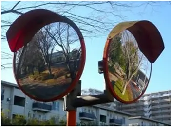

O que é a Física das Cores?
A física das cores é o estudo de como a luz interage com os objetos e com os nossos olhos. Ao contrário do que parece, a cor não é uma propriedade fixa de um objeto, mas sim a interpretação que o nosso cérebro faz da luz refletida por ele.
Principais Conceitos
Espectro Visível: A luz branca, como a luz do Sol, é uma mistura de todas as cores do arco-íris. Cada cor possui um comprimento de onda diferente. Ao passar por um prisma, essa luz pode se dividir, fenômeno conhecido como dispersão.
Absorção e Reflexão:
- Um objeto é vermelho porque absorve outras cores e reflete principalmente o vermelho.
- O branco reflete praticamente todas as cores.
- O preto absorve grande parte da luz que recebe.
Os Dois Sistemas de Cores
Para organizar como as cores se comportam no mundo físico e no mundo digital, podemos estudar diferentes sistemas de cores.
- RGB: baseado nas cores vermelho, verde e azul.
- CMYK: utilizado principalmente em processos de impressão.
Como Enxergamos as Cores?
Os olhos humanos possuem células especiais na retina chamadas cones. Existem três tipos principais de cones, sensíveis a diferentes faixas de luz. O cérebro recebe os estímulos dessas células, combina os sinais e gera a infinidade de cores que vemos no dia a dia.

Espelhos e Reflexão da Luz
A reflexão é o fenômeno óptico que ocorre quando a luz atinge uma superfície e retorna ao seu meio de origem. É graças a esse comportamento da luz que os espelhos conseguem projetar imagens.
As Leis da Reflexão
Toda reflexão segue duas regras fundamentais:
- O raio incidente, o raio refletido e a linha normal à superfície estão sempre no mesmo plano.
- O ângulo de incidência é igual ao ângulo de reflexão: i = r.
Tipos de Reflexão
Regular ou Especular: ocorre em superfícies lisas, como os espelhos. Os raios de luz retornam de forma organizada, permitindo a formação de imagens nítidas.
Difusa: ocorre em superfícies rugosas, como paredes e papel. A luz é espalhada em várias direções. Esse fenômeno permite que enxerguemos os objetos ao nosso redor.
Tipos de Espelhos e Suas Aplicações
Os espelhos são classificados de acordo com o formato de sua superfície refletora. Essa característica pode alterar o tamanho, a posição e o campo de visão da imagem.
- Espelho plano: forma imagens virtuais, direitas e de mesmo tamanho.
- Espelho côncavo: pode ampliar ou reduzir imagens dependendo da posição do objeto.
- Espelho convexo: produz imagens menores e aumenta o campo de visão.

A Óptica do Olho Humano
O olho funciona como um sistema óptico semelhante a um conjunto de lentes. A luz entra no olho, atravessa vários meios transparentes e é projetada no fundo do olho, onde é transformada em impulsos elétricos que são enviados ao cérebro.
Principais Componentes Ópticos
O caminho que a luz percorre é composto por várias estruturas importantes:
- Córnea: é a janela transparente e curva na parte da frente do olho. Ela realiza grande parte da refração da luz que entra.
- Íris e Pupila: a íris é a parte colorida do olho e controla o tamanho da pupila, regulando a quantidade de luz que entra.
- Cristalino: é uma lente natural, transparente e flexível localizada atrás da pupila. Ele ajuda a ajustar o foco para objetos próximos e distantes.
- Retina: funciona como uma espécie de sensor no fundo do olho. Possui células fotossensíveis, como cones e bastonetes, que transformam a luz em sinais elétricos.
O Mecanismo da Visão
- Entrada e Refração: os raios de luz refletidos pelos objetos passam pela córnea e pelo cristalino e sofrem refração.
- Formação da Imagem: a imagem é formada na retina de maneira invertida e reduzida.
- Processamento: o cérebro interpreta os sinais recebidos pela retina, permitindo que percebamos o mundo ao nosso redor.
Principais Anomalias Visuais
Quando o formato do olho ou das estruturas ópticas apresenta alterações, o foco da imagem pode não cair exatamente sobre a retina. Isso pode causar erros de refração.
- Miopia: dificuldade para enxergar objetos distantes.
- Hipermetropia: dificuldade principalmente para enxergar objetos próximos.
- Astigmatismo: pode causar visão distorcida ou borrada.
- Presbiopia: dificuldade progressiva para focar objetos próximos, geralmente associada ao envelhecimento.
A Física e Tecnociência da Trionda
⚽ Como ela funciona na prática
Dentro da Trionda há um sensor de movimento (IMU) e um chip eletrônico embutidos em um dos painéis da bola. Esse sistema permite coletar informações sobre o movimento da bola.
- 📡 Mede o movimento da bola centenas de vezes por segundo.
- 📍 Registra dados como velocidade, rotação, trajetória e aceleração.
- 🤖 Utiliza processamento para interpretar os dados.
- 🖥️ Pode enviar informações em tempo real para sistemas de análise e arbitragem.
Fonte: SBT News
🧠 Para que isso serve no jogo?
Esses dados podem ajudar principalmente na análise de lances durante as partidas.
- 📏 Detectar impedimentos com maior precisão.
- 👋 Auxiliar na identificação de possíveis toques de mão.
- 🎯 Determinar com precisão momentos importantes do lance.
- 🔁 Auxiliar na recriação de lances para análise do VAR.
Fonte: SpaceMoney
🔋 Ela precisa ser carregada?
A versão profissional da bola possui componentes eletrônicos que precisam de procedimentos específicos de manutenção, verificação e preparação antes das partidas.
Fonte: THMais
⚠️ Importante
A tecnologia eletrônica mais avançada está presente na versão profissional utilizada em competições oficiais. As versões vendidas ao público podem não possuir o mesmo conjunto de sensores e componentes.
Fonte: SBT News
🧾 Resumindo
A Trionda é uma bola de futebol que, além de possuir as características tradicionais de uma bola esportiva, pode incorporar tecnologia eletrônica para registrar informações sobre seu movimento e auxiliar sistemas de análise e arbitragem.
🤖 Robótica
Nesta seção são apresentados vídeos relacionados ao projeto de robótica.